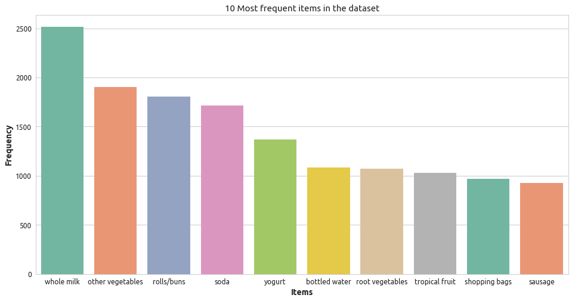
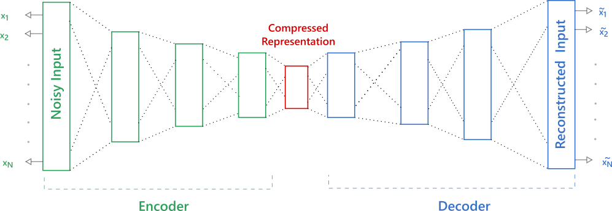

The ipython notebook with the complete code and dataset is available at the following link.
In this tutorial, we will apply denoising autoencoder on market basket data for collaborative filtering. The learned model then will be able to recommend similar items to users, based on the ones in their baskets. The groceries dataset is used in the tutorial; it consists of 9,835 transactions (or baskets) of the items purchased together. We will divide the dataset into train, test, and validation. We need to process the raw transactions data to convert in a format suitable for model input. For doing so, each transaction will be represented as a binary vector, where one indicates the item is in the basket and zero otherwise. Let us first read the dataset and define few helper functions, to find unique items, to convert them into one-hot encoded representation and convert back into items from the binary vector. Moreover, the Figure 1, provides ten most frequent items in the dataset.
import numpy as np
import pandas as pd
import tensorflow as tf
from sklearn.metrics import roc_auc_score
import matplotlib.pyplot as plt
import seaborn as sns
sns.set_style("whitegrid")
cols = ['1','2','3','4','5','6','7','8','9','10','11','12',
'13','14','15','16','17','18','19','20','21','22',
'23','24','25','26','27','28','29','30','31','32']
df = pd.read_csv("groceries.csv", sep = ",",
names = cols, engine = "python")
data = np.array(df)
def get_unique_items(data):
ncol = data.shape[1]
items = set()
for c in range(ncol):
items = items.union(data[:,c])
items = np.array(list(items))
items = items[items != np.array(None)]
return np.unique(items)
def get_onehot_items(data,unique_items):
onehot_items = np.zeros((len(data),len(unique_items)),dtype = np.int)
for i, r in enumerate(data):
for j, c in enumerate(unique_items):
onehot_items[i,j] = int(c in r)
return onehot_items
def get_items_from_ohe(ohe,unique_items):
return unique_items[np.flatnonzero(ohe)]
unique_items = get_unique_items(data)
onehot_items = np.array(get_onehot_items(data, unique_items))
n = 10
item_counts = (onehot_items != 0).sum(0)
items_max_args = item_counts.argsort()[-n:][::-1]
ic = pd.DataFrame({"Items":unique_items[items_max_args], \
"Frequency":item_counts[items_max_args]})
fig = plt.figure(figsize = (16,8))
sns.barplot(x="Items", y="Frequency", data=ic, palette=sns.color_palette("Set2", 10))
plt.xlabel("Items")
plt.ylabel("Frequency")
plt.title(str(n) + " Most frequent items in the dataset")
plt.show()

Figure 1: Most frequent items in dataset
train_test_split = np.random.rand(len(onehot_items)) < 0.80
train_x = onehot_items[train_test_split]
test_x = onehot_items[~train_test_split]
train_validation_split = np.random.rand(len(train_x)) < 0.80
validation_x = train_x[~train_validation_split]
train_x = train_x[train_validation_split]
The autoencoder model learns to approximately reconstruct its own input. While doing so, it learns a salient representation of the data. Hence, it is also used for dimensionality reduction purposes. The model consists of two components, an encoder, and a decoder. The encoder maps the input Rn --> Rd and decoder reproduce the input from the reduced dimensions i.e. mapping Rd --> Rn. The noise in the input is usually introduced in the training phase (e.g. by means of Dropout) to avoid learning an identity function; hence get the name of denoising autoencoder. In our case, during model training, a noisy or corrupted basket with some items missing will be used as input. At test time, the one-hot encoded basket items will be feed into the model to get item predictions. Then from the output, we will have to select items with probabilities greater than some threshold value (for now, if p >= 0.1 then 1 else 0), to convert back into one-hot encoded vector. Finally, items with one in the binary vector can be recommended to the user.
Now let us define a four layers denoising autoencoder model (i.e. 4 layers in encoder and 4 layers in the decoder). The soft sign activation function will be used in the first three layers of encoder and decoder, while sigmoid is used in the fourth. The binary cross entropy is used as a loss function that will be minimized using a variant of stochastic gradient descent, generally known as Adam. The model architecture is illustrated in Figure 2, it can be seen that the input dimensionality is 169 (i.e. number of unique items in the dataset). Likewise, the number of neurons in first, second, third and fourth layers are 128, 64, 32 and 16 respectively. The dropout is introduced at the input layer with probability of 0.6 (i.e. dropping 40% of the inputs randomly). Moreover, the weights of the encoder are regularized using l2-regularization with rate of 0.00001.

Figure 2: Denoising Model Architecture
def weight_variable(weight_name, weight_shape):
return tf.get_variable(name = "weight_" + weight_name,shape = weight_shape,
initializer = tf.contrib.layers.xavier_initializer())
def bias_variable(bias_shape):
initial = tf.constant(0.1, shape = bias_shape)
return tf.Variable(initial)
def encoder(x):
l1 = tf.nn.softsign(tf.add(tf.matmul(x,e_weights_h1),e_biases_h1))
l2 = tf.nn.softsign(tf.add(tf.matmul(l1,e_weights_h2),e_biases_h2))
l3 = tf.nn.softsign(tf.add(tf.matmul(l2,e_weights_h3),e_biases_h3))
l4 = tf.nn.sigmoid(tf.add(tf.matmul(l3,e_weights_h4),e_biases_h4))
return l4
def decoder(x):
l1 = tf.nn.softsign(tf.add(tf.matmul(x,d_weights_h1),d_biases_h1))
l2 = tf.nn.softsign(tf.add(tf.matmul(l1,d_weights_h2),d_biases_h2))
l3 = tf.nn.softsign(tf.add(tf.matmul(l2,d_weights_h3),d_biases_h3))
l4 = tf.nn.sigmoid(tf.add(tf.matmul(l3,d_weights_h4),d_biases_h4))
return l4
input_dim = 169
n_hidden_1 = 128
n_hidden_2 = 64
n_hidden_3 = 32
n_hidden_4 = 16
training_epochs = 30
batch_size = 10
total_batches = (train_x.shape[0] // batch_size)
learning_rate = 0.00002
keep_prob = 0.6
l2_reg_rate = 0.00001
tf.reset_default_graph()
is_training = tf.placeholder_with_default(False, shape = ())
X = tf.placeholder(tf.float32, shape=[None,input_dim])
X_drop = tf.contrib.layers.dropout(X, keep_prob, is_training = is_training)
# --------------------- Encoder Variables --------------- #
e_weights_h1 = weight_variable("el1",[input_dim, n_hidden_1])
e_biases_h1 = bias_variable([n_hidden_1])
e_weights_h2 = weight_variable("el2",[n_hidden_1, n_hidden_2])
e_biases_h2 = bias_variable([n_hidden_2])
e_weights_h3 = weight_variable("el3",[n_hidden_2, n_hidden_3])
e_biases_h3 = bias_variable([n_hidden_3])
e_weights_h4 = weight_variable("el4",[n_hidden_3, n_hidden_4])
e_biases_h4 = bias_variable([n_hidden_4])
# --------------------------------------------------------- #
# --------------------- Decoder Variables --------------- #
d_weights_h1 = weight_variable("dl1",[n_hidden_4, n_hidden_3])
d_biases_h1 = bias_variable([n_hidden_3])
d_weights_h2 = weight_variable("dl2",[n_hidden_3, n_hidden_2])
d_biases_h2 = bias_variable([n_hidden_2])
d_weights_h3 = weight_variable("dl3",[n_hidden_2, n_hidden_1])
d_biases_h3 = bias_variable([n_hidden_1])
d_weights_h4 = weight_variable("dl4",[n_hidden_1, input_dim])
d_biases_h4 = bias_variable([input_dim])
# --------------------------------------------------------- #
encoded = encoder(X_drop)
decoded = decoder(encoded)
regularizer = tf.contrib.layers.l2_regularizer(l2_reg_rate)
reg_loss = regularizer(e_weights_h1) + regularizer(e_weights_h2) \
+ regularizer(e_weights_h3) + regularizer(e_weights_h4)
cost_function = -tf.reduce_mean(((X * tf.log(decoded)) \
+ ((1 - X) * tf.log(1 - decoded)))) + reg_loss
optimizer = tf.train.AdamOptimizer(learning_rate).minimize(cost_function)
This is all the code; we need to define our model. Now the code provided below will train/evaluate the autoencoder and calculate a ROC AUC score.
with tf.Session() as session:
tf.global_variables_initializer().run()
print("Epoch"," ","Tr. Loss"," ","Val. Loss")
for epoch in range(training_epochs):
for b in range(total_batches):
offset = (b * batch_size) % (train_x.shape[0] - batch_size)
batch_x = train_x[offset:(offset + batch_size), :]
_, c = session.run([optimizer, cost_function],feed_dict={X: batch_x, \
is_training: True})
tr_c = session.run(cost_function,feed_dict={X: train_x, is_training: False})
val_c = session.run(cost_function,feed_dict={X: validation_x, is_training: False})
print(epoch,"\t",tr_c," ",val_c)
tr_p = session.run(decoded,feed_dict={X: train_x, is_training: False})
roc_auc = roc_auc_score(train_x,tr_p,average = "samples")
print("Training ROC AUC: ", round(roc_auc,4))
val_p = session.run(decoded,feed_dict={X: validation_x, is_training: False})
roc_auc = roc_auc_score(validation_x,val_p,average = "samples")
print("Validation ROC AUC: ", round(roc_auc,4))
ts_p = session.run(decoded,feed_dict={X: test_x, is_training: False})
roc_auc = roc_auc_score(test_x,ts_p,average = "samples")
print("Test ROC AUC: ", round(roc_auc,4),"\n")
item_preds = session.run(decoded,feed_dict={X: test_x.reshape(-1,169), is_training: False})
item_preds[item_preds >= 0.1] = 1
item_preds[item_preds < 0.1] = 0
i = 60
print("Items in basket: ", get_items_from_ohe(test_x[i],unique_items))
print("Recommended item(s): ",get_items_from_ohe(item_preds[i],unique_items))
Some of the recommendation on test set made by this model are provided below:
Items in basket: ham, herbs, onions, sparklingwine
Recommended items: bottled water, other vegetables, rolls/buns, root vegetables, shopping bags,
soda, tropical fruit, whole milk, yogurt
Items in basket: napkins, sausage, white wine
Recommended items: other vegetables, rolls/buns, soda, whole milk, yogurt
Items in basket: abrasive cleaner, candy, chicken, cleaner, root vegetables, sausage, tropical fruit, whole milk, yogurt
Recommended items: beef, bottled beer, bottled water, brown bread, butter, canned beer,citrus fruit, coffee, curd, domestic eggs, frankfurter,
fruit/vegetable juice, margarine, newspapers, other vegetables, pastry,
pip fruit, pork, rolls/buns, root vegetables, sausage, shopping bags,
soda, tropical fruit, whipped/sour cream, whole milk, yogurt
If you have any question or suggestion about this tutorial or proposal for future, blog posts; please comment below. The ipython notebook with complete code and dataset is accessible from the following link.